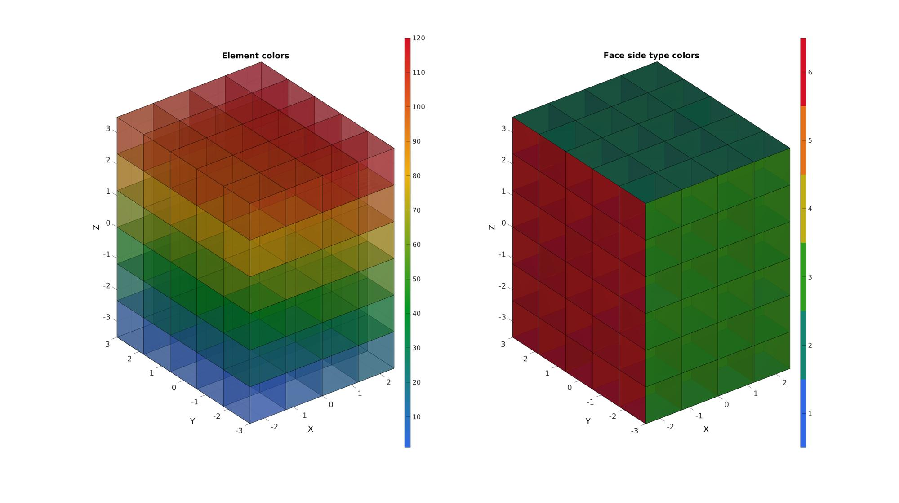
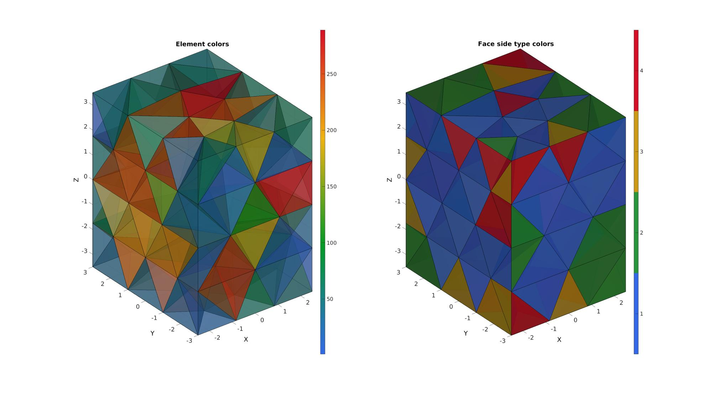
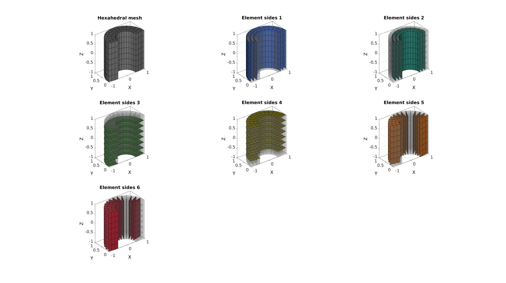

element2patch
Below is a demonstration of the features of the element2patch function
Contents
Syntax
[F,CF]=element2patch(E,C,elementType);
Description
Use element2patch to generate patch data for the faces of an element set such as tetrahedral or hexahedral elements. The output patch data can be visualized using gpatch. The inputs are the element array E, and optionally also color data on the elements C, and the elementType (e.g. tet4, tet10, hex8). The output consists of the element faces F and the colordata for the elements sampled at the faces CF.
clear; close all; clc;
Examples
PLOT SETTINGS
fontSize=20; faceAlpha1=1; faceAlpha2=0.5;
Example: Visualizing a hexahedral mesh
Creating example geometry
boxDim=[5 6 7];
boxEl=[4 5 6];
[meshStruct]=hexMeshBox(boxDim,boxEl);
E=meshStruct.E;
V=meshStruct.V;
C=(1:1:size(E,1))'; %Example data on elements, e.g. element number or stress
Using element2patch to obtain patch data for plotting
[F,C_faces,C_sides]=element2patch(E,C,'hex8');
Plotting model
cFigure; subplot(1,2,1); title('Element colors'); gpatch(F,V,C_faces,'k',0.5); axisGeom(gca,fontSize); camlight headlight; colormap(gca,gjet(250)); colorbar; subplot(1,2,2); title('Face side type colors'); gpatch(F,V,C_sides,'k',0.9); axisGeom(gca,fontSize); camlight headlight; colormap(gca,gjet(6)); icolorbar; drawnow;
Example: Visualizing a tetrahedral mesh
[meshStruct]=tetMeshBox(boxDim,2);
E=meshStruct.elements;
V=meshStruct.nodes;
C=(1:1:size(E,1))'; %Example data on elements, e.g. element number or stress
%%%%%%%%%%%%%%%%%%%%%%%%%%%%%%%%%%%%%%%%%%%%% --- TETGEN Tetrahedral meshing --- 20-Jun-2019 14:47:25 %%%%%%%%%%%%%%%%%%%%%%%%%%%%%%%%%%%%%%%%%%%%% --- Writing SMESH file --- 20-Jun-2019 14:47:25 ----> Adding node field ----> Adding facet field ----> Adding holes specification ----> Adding region specification --- Done --- 20-Jun-2019 14:47:25 --- Running TetGen to mesh input boundary--- 20-Jun-2019 14:47:25 Opening /mnt/data/MATLAB/GIBBON/data/temp/temp.smesh. Delaunizing vertices... Delaunay seconds: 0.001234 Creating surface mesh ... Surface mesh seconds: 0.000237 Recovering boundaries... Boundary recovery seconds: 0.000279 Removing exterior tetrahedra ... Spreading region attributes. Exterior tets removal seconds: 5.4e-05 Recovering Delaunayness... Delaunay recovery seconds: 0.000316 Refining mesh... Refinement seconds: 0.000796 Optimizing mesh... Optimization seconds: 0.0001 Writing /mnt/data/MATLAB/GIBBON/data/temp/temp.1.node. Writing /mnt/data/MATLAB/GIBBON/data/temp/temp.1.ele. Writing /mnt/data/MATLAB/GIBBON/data/temp/temp.1.face. Writing /mnt/data/MATLAB/GIBBON/data/temp/temp.1.edge. Output seconds: 0.000843 Total running seconds: 0.003928 Statistics: Input points: 70 Input facets: 136 Input segments: 204 Input holes: 0 Input regions: 1 Mesh points: 89 Mesh tetrahedra: 289 Mesh faces: 646 Mesh faces on exterior boundary: 136 Mesh faces on input facets: 136 Mesh edges on input segments: 204 Steiner points inside domain: 19 --- Done --- 20-Jun-2019 14:47:25 %%%%%%%%%%%%%%%%%%%%%%%%%%%%%%%%%%%%%%%%%%%%% --- Importing TetGen files --- 20-Jun-2019 14:47:25 --- Done --- 20-Jun-2019 14:47:25
Using element2patch to obtain patch data for plotting
[F,C_faces,C_sides]=element2patch(E,C,'tet4');
Plotting model
cFigure; subplot(1,2,1); title('Element colors'); gpatch(F,V,C_faces,'k',0.5); axisGeom(gca,fontSize); camlight headlight; colormap(gca,gjet(250)); colorbar; subplot(1,2,2); title('Face side type colors'); gpatch(F,V,C_sides,'k',0.9); axisGeom(gca,fontSize); camlight headlight; colormap(gca,gjet(6)); icolorbar; drawnow;
Example: Studying the element face side labels
% Creating an example polygon ns=15; t=linspace(0,pi,ns); x=cos(t); y=sin(t); z=zeros(size(x)); Vc=flipud([x(:) y(:) z(:)]); %Extruding polygon to a quadrilateral surface cPar.depth=2; cPar.patchType='quad'; cPar.dir=0; cPar.closeLoopOpt=0; cPar.numSteps=8; [F,V]=polyExtrude(Vc,cPar); %Thickening quadrilaterial surface to hexahedral elements layerThickness=0.5; numSteps=3; [E,VE,Fq1,Fq2]=quadThick(F,V,1,layerThickness,numSteps); %Use element2patch to get patch data [FE,~,faceSideType]=element2patch(E);
Visualize the face side labels
plotColors=gjet(6); cFigure; subplot(3,3,1); hold on; title('Hexahedral mesh') gpatch(FE,VE,'kw','k',1); axisGeom; camlight headlight; for q=1:1:6 subplot(3,3,q+1); hold on; title(['Element sides ',num2str(q)]); gpatch(FE,VE,'kw','none',0.25); gpatch(FE(faceSideType==q,:),VE,plotColors(q,:),'k',1); axisGeom; camlight headlight; end drawnow;

GIBBON www.gibboncode.org
Kevin Mattheus Moerman, gibbon.toolbox@gmail.com
GIBBON footer text
License: https://github.com/gibbonCode/GIBBON/blob/master/LICENSE
GIBBON: The Geometry and Image-based Bioengineering add-On. A toolbox for image segmentation, image-based modeling, meshing, and finite element analysis.
Copyright (C) 2019 Kevin Mattheus Moerman
This program is free software: you can redistribute it and/or modify it under the terms of the GNU General Public License as published by the Free Software Foundation, either version 3 of the License, or (at your option) any later version.
This program is distributed in the hope that it will be useful, but WITHOUT ANY WARRANTY; without even the implied warranty of MERCHANTABILITY or FITNESS FOR A PARTICULAR PURPOSE. See the GNU General Public License for more details.
You should have received a copy of the GNU General Public License along with this program. If not, see http://www.gnu.org/licenses/.